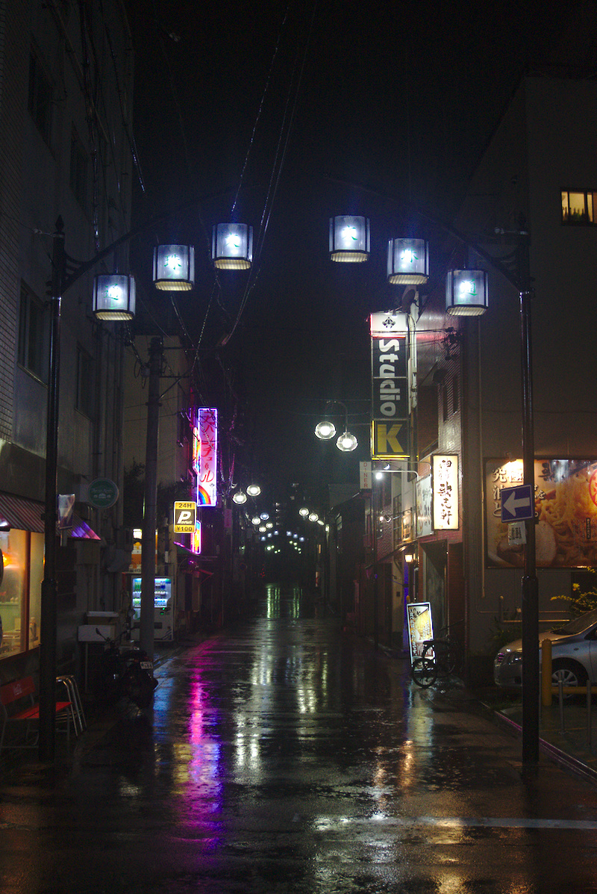
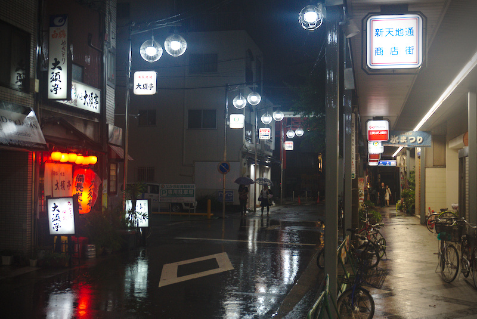

Regenseizoen in Japan, deel twee. Het regende vandaag de hele dag. En niet zo’n beetje ook. Gelukkig is de regen hier in Nagoya niet zo zwaar als in het artikel, maar toch was het gewoon de hele dag door regenachtig. Nou moesten we toch nog even de komende week wat meer uitplannen, dus we hadden binnen wel wat te doen. Toch was het ook wel leuk geweest om iets meer van Nagoya te zien. Misschien een andere keer. Het heeft me wel de kans gegeven om deze site bij te werken. :-)

Regenachtig Nagoya

Regenachtig Nagoya #2